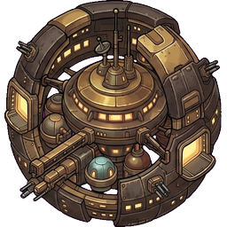
Alles, was du wissen musst — von der ersten Sonde bis zum Orbitalring 3. Jede Zahl auf dieser Seite ist die, mit der das Spiel wirklich rechnet.
Jeder baut sein eigenes Ding — aber erobern können wir das All nur gemeinsam.
Eure Galaxie hat 108 Planeten: 18 im Ring 1, 36 im Ring 2, 54 im Ring 3. Ihr teilt euch eine einzige Karte. Es gibt kein Gegeneinander — niemand kann dich angreifen, der Gegner ist immer die KI. Was einer befreit, steht für alle offen; was niemand hält, holen sich die Wächter zurück.
Der Weltraum öffnet sich, wenn du das Imperium auf der Erde vollendet und die drei Einstiegs-Forschungen abgeschlossen hast: Ionenantrieb, Frachtmodule und Handbohrer. Danach steht dein Raumhafen — und der Rest liegt an dir.
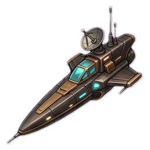
Bohnen-Sonde los Sie kostet 750 CC und deckt einen Nebel-Quadranten auf. Ohne Aufklärung fliegst du blind — du siehst weder, wie stark die Wächter sind, noch was der Planet hergibt.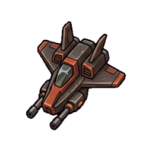
Jäger und nimm einen Ring‑1‑Planeten Ring‑1‑Wächter haben 40–119 Kampfkraft. Ein Jäger bringt 10 — mit 15–20 Jägern bist du auf der sicheren Seite. Die Kampfvorschau rechnet es dir vor dem Start aus.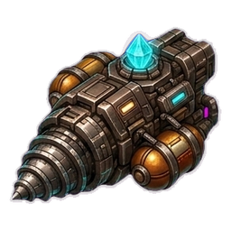
Röstkometen und richte eine Dauerernte ein Das ist deine erste Einnahmequelle, die ohne dich läuft. Stationierte Röstkometen fördern Tag für Tag, auch wenn du die App nicht öffnest.Bau zuerst die Einnahmen, dann die Flotte. Eine große Flotte ohne Ernte frisst dich über den Flottensold auf — jedes Schiff kostet dich täglich 1 % seines Bauwerts.
Dein Raumhafen steht im Heimatquadranten. Von dort geht es in drei Ringen nach außen.
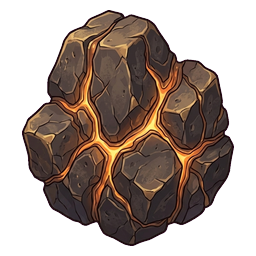
und Koffeinkristall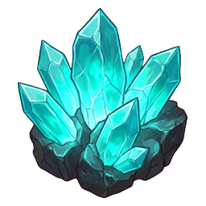
.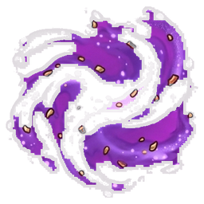
Plasmoiden-Staub. Und hier lauern Hinterhalte: 30 % Wahrscheinlichkeit pro Anflug (Ring 1: 12 %).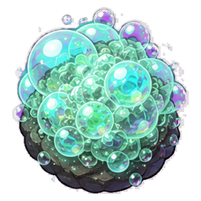
Quantenschaum an. Kleine Jäger schaffen den Sprung nicht allein — je 20 Jäger braucht es ein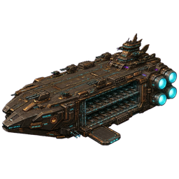
Trägerschiff im Verband.Ein Planet, um den sich niemand kümmert, fällt an die Wächter zurück — und beim nächsten Mal sind sie 1,6-mal so stark wie zuvor. Fläche sammelt sich nicht an: sie muss gehalten werden. Genau deshalb ist „alles erobern" keine Fleißaufgabe, sondern eine Frage dessen, was ihr gemeinsam tragen könnt.
| Rohstoff | Woher | Wofür |
|---|---|---|
Erz |
Abbauflüge, Dauerernte, Kolonien, Wrackfelder | Schiffe, Geschütze, Forschung — der Grundstoff für alles |
Koffeinkristall |
dieselben Wege, aber seltener | Treibstoff. Jede Reise und jede Route verbraucht ihn — er ist der einzige Rohstoff mit dauerndem Abfluss und deshalb immer knapp |
Plasmoiden-Staub |
ab Ring 2 — Abbau (braucht den Plasmoid-Kollektor) oder als Kampfbeute | schwere Geschütze, Reaktoren, Kampf-Injektion, hohe Forschungen |
Quantenschaum |
nur Ring 3 — Abbau (braucht den Quantenschaum-Extraktor) oder als Kampfbeute | das Spätspiel: Quanten-Geschütz, Mutterschiff, die teuersten Techniken |
🟣 und 🌀 abbauen darfst du erst mit der passenden Technik. Aber als Kampfbeute fallen sie auch ohne sie an — wer im Ring 2 oder 3 kämpft, kommt an beide heran. Das ist Absicht: es soll einen Weg über Spielen geben, nicht nur über Forschen.
⚠️ Erz und Kristall kannst du nicht kaufen. Es gibt sie ausschließlich im All, und sie zählen nicht zu deinem CoffeeCoin-Vermögen.
Stationierte Röstkometen fördern jeden Tag, ohne dass du etwas tust. Die verlässlichste Einnahme im Spiel.
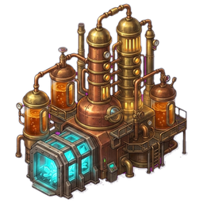
🏭 RaffinerieWandelt Rohstoffe in CC. Eine Charge läuft 8 Stunden, mit jeder Ausbaustufe eine Stunde weniger — bis auf 3 Stunden.
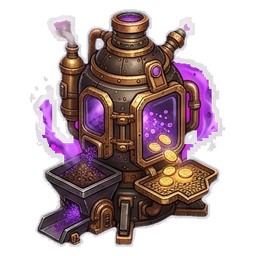
⚗️ TransmuterWandelt 🟣 und 🌀 sofort in CC — zu einem schlechteren Kurs als die Raffinerie. Der Notausgang, wenn etwas übrig ist.
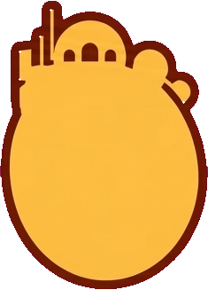
🪐 KolonienWerfen täglich Rohstoffe ab, mit der Handelskolonie zusätzlich CC. Höhere Stufe, höherer Ertrag.
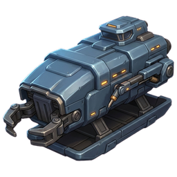
♻️ Wracks bergenWrackfelder sind endlich und geteilt — was ein Mitspieler holt, ist weg. Wer zuerst da ist, gewinnt.
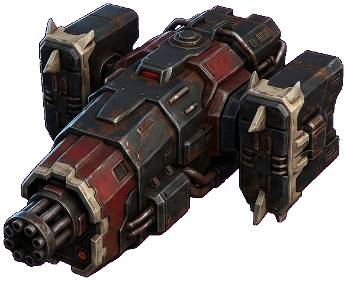
⚔️ KampfbeuteJeder gewonnene Kampf bringt Rohstoffe — ab Ring 2 auch 🟣, ab Ring 3 auch 🌀.
Jedes Schiff hat eine Kampfkraft, eine Klasse (leicht oder schwer) und eine Verlust-Reihenfolge. Das Modell ist eine Größen-Hierarchie, kein Schere-Stein-Papier: leicht schlägt leicht, schwer schlägt schwer.
| Schiff | ⚔️ Kampfkraft | 🛡️ Schild | Preis | Fällt… |
|---|---|---|---|---|
Jäger | 10 | 0 % | 1.150 CC | zuerst |
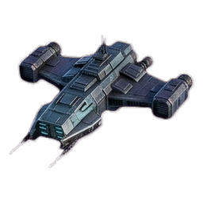 Großer Jäger | 20 | 5 % | 2.000 CC | früh |
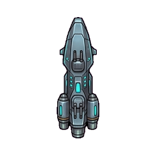 Fregatte | 28 | 15 % | 2.250 CC | früh |
Trägerschiff | 40 | 30 % | 22.500 CC | spät |
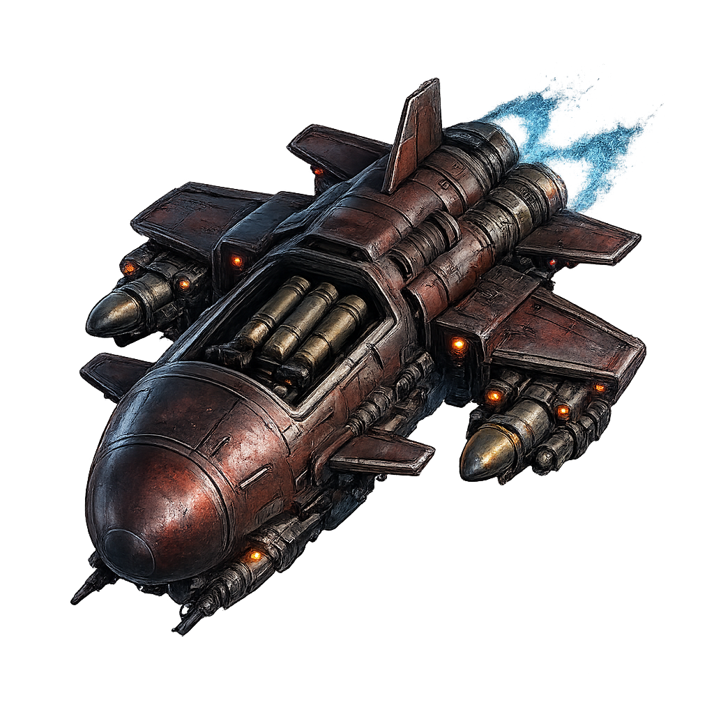 Kreuzer | 65 | 5 % | 4.500 CC | mittel |
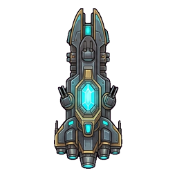 Bomber | 90 | 10 % | 6.900 CC | mittel |
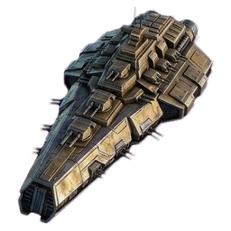 Schlachtschiff | 180 | 20 % | 13.800 CC | spät |
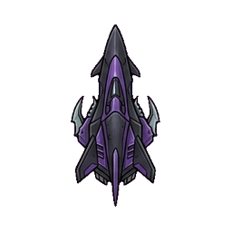 Dunkle Röstung | 320 | 30 % | 26.300 CC | sehr spät |
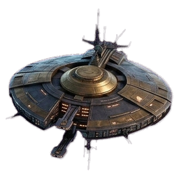 Mutterschiff | 1.170 | 35 % | 37.500 CC + Rümpfe | als letztes |
Die Preise gelten ohne Werft-Rabatt. Eine ausgebaute Werft baut bis zu 20 % billiger und 45 % schneller.
Bohnen-Sonde — deckt Nebel auf ·
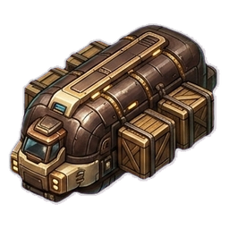
Espresso-Kutter — Frachtraum · Röstkomet — Abbau und Dauerernte · Bergungsschiff — Wracks ·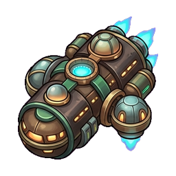
Kolonieschiff — gründet Kolonien⚠️ Nimm sie nicht in einen Kampfverband mit. Sie haben fast keine Kampfkraft, aber die Verluste treffen die kleinen Schiffe zuerst — sie sind reines Kanonenfutter.
Ja. Aber der Jäger hat 0 % Schild und fällt als erstes Schiff im Verband. Eine Flotte aus fast nur Jägern hat rechnerisch gar keinen Schild — ihre Verluste sind ungebremst. Das ist keine Panne, das ist der Preis dafür, dass der Jäger das billigste Kampfschiff ist.
Der Verbandsschild senkt eure Verluste — nicht die Siegchance. Er ist der nach Kampfkraft gewichtete Durchschnitt aller Schiffe im Verband und bei 40 % gedeckelt.
Die Zeile „🛡️ Verbandsschild" steht beim Zusammenstellen direkt unter der Kampfkraft. Schau sie an, bevor du absendest.
42 Techniken in vier Ästen. Du hast drei Laborplätze, ein Projekt läuft je nach Stufe zwischen 2 Stunden und 5 Tagen. Bezahlt wird beim Start.
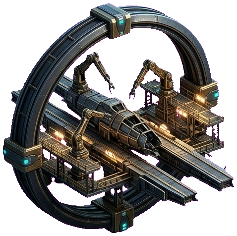
🚀 Antrieb & HülleKürzere Flugzeiten, schnellere und günstigere Werft.
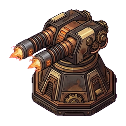
🛡️ BewaffnungStärkere Geschütze und mehr Flotten-Kampfkraft.
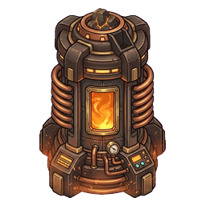
⛏️ SchürftechnikMehr Ausbeute, ergiebigere Dauerernte — und die Schlüssel zu 🟣 und 🌀.
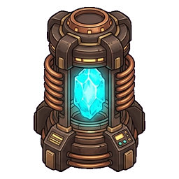
🏭 Raffinerie & LogistikHöherer Durchsatz, mehr Kolonie-Ertrag, der ⚗️ Transmuter.
Eine Technik verlangt ihre abgeschlossene Vorstufe. Du kannst also nicht Stufe 1, 2 und 3 desselben Astes gleichzeitig anstoßen — die Kette wartet weiter aufeinander. Drei Plätze bedeuten: drei Äste nebeneinander vorantreiben.
Eine Kolonie ist ein dauerhafter Stützpunkt: sie liefert täglich Ertrag, kann Geschütze tragen und eine Garnison aufnehmen. Gegründet wird mit einem Kolonie-Kit — Schiffe und Rohstoffe zusammen.
| Ring | Kit (Rohstoffe) | CC | Schiffe |
|---|---|---|---|
| Ring 1 | 600 🪨 · 180 💎 | 8.000 | 10 Jäger, 3 Kutter |
| Ring 2 | 1.000 🪨 · 320 💎 · 60 🟣 | 16.000 | 20 Jäger, 5 Kutter, 2 Fregatten, 1 Röstkomet |
| Ring 3 | 1.600 🪨 · 500 💎 · 120 🟣 · 50 🌀 | 28.000 | 30 Jäger, 8 Kutter, 4 Fregatten, 2 Röstkometen |
Geschütze stehen am Raumhafen und auf Kolonien. Sie decken anfliegende Verbände mit ab und wehren KI-Angriffswellen eigenständig.
| Geschütz | Feuerkraft | Braucht |
|---|---|---|
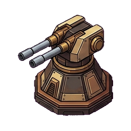 Railgun | 20 | Einstieg |
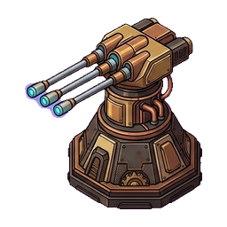 Laserbatterie | 45 | Forschung |
Plasmawerfer | 85 | Forschung |
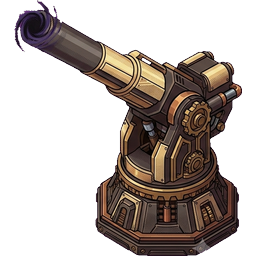 Singularität | 130 | 🟣 Plasmoid |
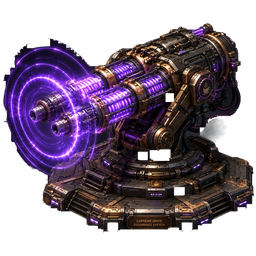 Resonanz-Geschütz | 200 | 🟣 Plasmoid |
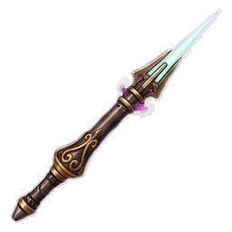 Quanten-Geschütz | 320 | 🌀 Quantenschaum |
Du kannst Schiffe dauerhaft auf einer Kolonie stationieren — sie zählen dort zur Verteidigung. Platz: 10 Schiffe je Kolonie-Stufe. ⚠️ Sie sind dann nicht mehr in deiner Heimatflotte und verteidigen den Raumhafen nicht mit.
Gemietete Kampfkraft auf Zeit. Sie kosten das Dreifache des CC-Bauwerts der entsprechenden Schiffe — teuer, aber sofort da. Gut, wenn eine Angriffswelle näher ist als deine Werft schnell.
Die KI greift an — Raumhafen wie Kolonien. Du bekommst eine Vorwarnzeit (30–120 Minuten) und siehst Stärke und deine Verteidigung. In der Zeit kannst du Geschütze bauen, Söldner mieten, eine Garnison verlegen oder um Hilfe rufen.
Wer auf einen Hilferuf eines Mitspielers reagiert, bekommt eine eigene Belohnung — Hilfe ist keine Wohltätigkeit, sondern eine Einnahmequelle. Ihr steht nie gegeneinander: es gibt kein PvP.
Besitz kostet Geld, jeden Tag. Wer nur baut und nicht rechnet, rutscht ins Minus.
| Posten | Satz | Bemerkung |
|---|---|---|
| ⚓ Flottensold | 1,0 % / Tag | vom Bauwert jedes Schiffs im Hafen |
| 🛰️ Stationierte Schiffe | 0,5 % / Tag | halber Satz — sie erwirtschaften selbst |
| 🛡️ Geschütz-Unterhalt | 0,5 % / Tag | je Geschütz, am Hafen wie auf Kolonien |
| 💰 Einsatzkosten | 3 CC je Kampfkraft | einmalig beim Absenden eines Verbands |
| ⛽ Treibstoff | je Ring | 💎 Kristall, ab Ring 2 zusätzlich 🟣 und 🌀 |
Was du gerade nicht brauchst, kannst du einmotten — dann zahlst du keinen Sold dafür. Der Weg zurück steht im 🛩️ Flotten-Tab. Besser einmotten als verkaufen.